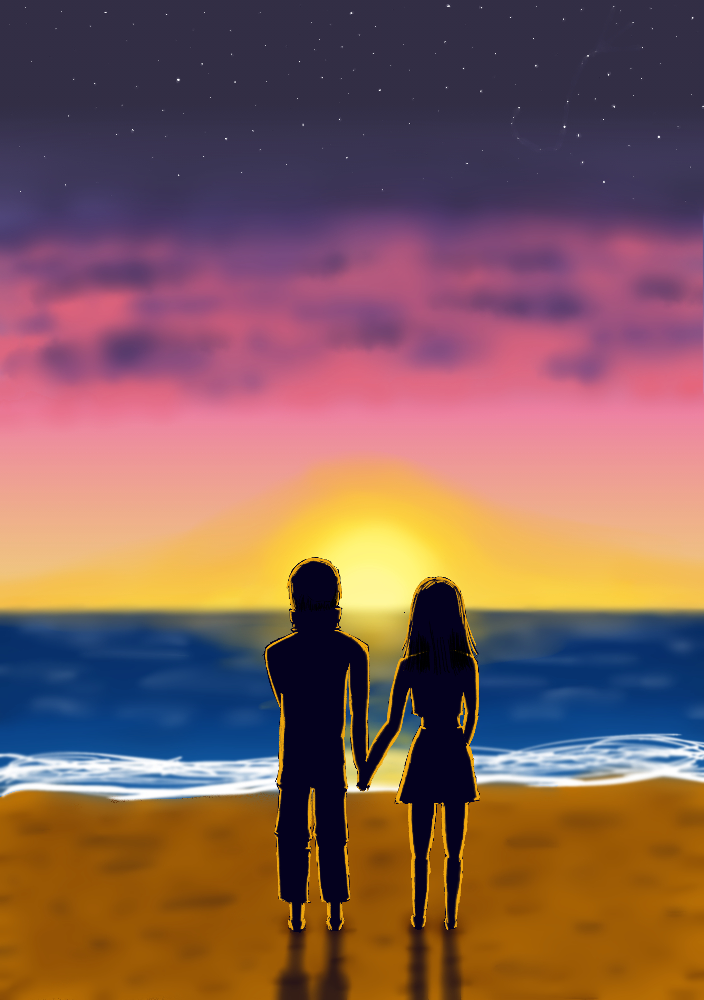

Hello, I'm Agathe Debadier 🦑
Salut ! Je suis Agathe, une ✨merveilleuse✨ personne. J'ai 18ans♏. Je suis étudiante à l'IESEG à Lille.
ãŠã¯ã‚ˆã”ã–ã„ã¾ã™ã€‚ç§ã¯ã‚¢ã‚¬ãƒˆã§ã™ã€‚リールã®å¤§å¦ã®ã‘ã„ã–ã„ã®å¦ç”Ÿã§ã™ã€‚フランス人ã§ã™ã€‚
Viens découvrir mon idée de start up, play list, ici !
Goals🦋
Explore Asia, especially South Korea and Japan🗾
Voici mes objectifs durant mes études. Mais dans mes objectifs à très long terme on peut retrouver l'envie de me marier et de fonder une famille avec des enfants. J'ai aussi une forte volonté de vivre ma vie à fond, sans forcément me mettre en danger et tenter des choses incroyables mais je pense que la vie est une expérience et qu'il faut prendre les opportunités qu'elle nous offre.
Ainsi j'ai très envie au moins une fois dans ma vie de faire du parapente, du parachute et du surf. J'ai aussi très envie, et je compte bien le faire, de passer mon permis bâteau. Un jour j'aurai un yacht ! J'ai aussi pour ambition de découvrir pleins de pays, dont notamment les pays d'Asie. Ainsi je compte bien apprendre beaucoup de langues. Je parle déjà couramment anglais, je fais de l'allemand depuis la 6ème et j'ai commencé le japonais récemment. Mais j'ai bien l'intention de continuer sur cette lancée en commençant le coréen, peut-être que j'apprendrais aussi l'espagnol, l'italien, et soyons fantaisiste, pourquoi pas la langue elfique du seigneur des anneaux !
Art🦩
I like drawing. I love learn new way to draw. I draw a lot of characters with inspiration from ✨anime & manga✨
J'adore dessiner ! Ca m'aide à me détendre et me libère l'esprit. Quand je dessine je peux poser toutes mes idées sur un papier. Je dessine principalement dans un style manga, mais j'aime essayer de nouvelles choses. Je dessine principalement sur papier, mais parfois ça m'arrive de faire du dessin numérique, ce qui me permet de mieux jouer avec les couleurs. J'ai beaucoup recopier des planches de mangas avant de dessiner mes propres personnages. Voici d'ailleurs des exemple de dessins que j'ai recopier :

Voici quelques autres dessins que j'ai pu faire :


Enfin voici le seul dessin que j'ai fini en digital art :
- 
Mais je ne fais pas que dessiner, j'essaie aussi différentes choses, notamment je chante parfois, bien que je n'ai pas de réel talent, j'essaie d'apprendre à danser, parfois j'écris, j'ai fait du théâtre pendant 6ans... Bref j'aime tout ce qui est un peu artistique
Travel🦚
Let's discover the world together🗺ï¸ğŸ§
J'ai fait beaucoup de voyages avec mes parents, notamment en Europe, mais pas que ! Ainsi, dans les pays européen où je suis allée il y a :
- le Royaume-Unis, où j'ai visité Londres, avec Buckingham Palace, Tate Modern, National Gallery, British Museum, le refectoir de Christ Church College à Oxford;
- l'Italie, où je suis allée à Florence, Venise, Pise, Milan et Rome;
- l'Espagne, avec Barcelone;
- le Portugal, Ã Lisbonne;
- l'Allemagne, Ã Freiburg (Fribourg) et Neuendelteslau, une petite ville non loin de Nuremberg;
- et enfin la Suisse, mais je n'y suis jamais restée logntemps, sauf lorsuq'on a fait le tour du mont Blanc en randonnée
Et voici les rares voyages que j'ai pu faire à l'exterieur de l'Europe :
- la Turquie, mais j'étais très jeune pour bien m'en rappeler
- et le Canada, où nous avons fait un road trip dans le Québec, en passant par Montréal et Québec mais aussi en allant jusqu'au golfe du Saint Laurent et en Gaspésie, où nous avons pu voir des baleines !